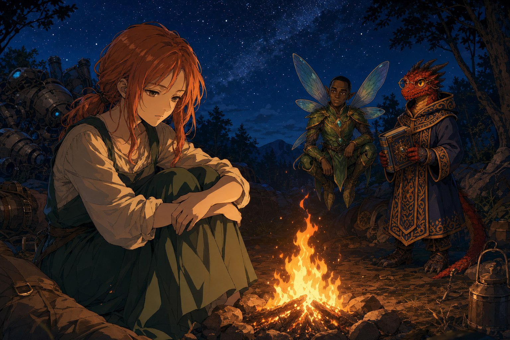

Episodes
-

EPISODE 0
“캐릭터메이킹”
어둠칼의 다섯 시즌이 끝나고, 한동안은 다시 모일 일이 없을 거라 생각했다. 그런데 잊을 만하면 울리는 새 캠페인의 알림이 다시 한 번 도착했다. 이번에는 어둠칼도, 잿불도 아니었다. 표지만 보아도 포근한 색감의 판타지 동화책 같은, 대거하트라는 낯선 룰이었다. 정발도 되지 않았고 국내…
-

EPISODE 1
“왜 그렇게까지 해서 기계 인형을 쓰는건데?”
구제국력 849년, 늦가을. 나라의 동쪽 끝에 자리한 브라에스 시의 하얀 석조 광장에 햇살이 가득했다. 돌 분수 주위로 형형색색의 천막이 늘어서고, 상인들은 구운 빵과 단 음료를 팔며 손님을 불렀다. 아이들이 나무 사이를 뛰어다니고 거리 악사들이 북과 피리로 리듬을 맞추는 사이, 알록달…
-

EPISODE 2
“그 곳으로 가서 알아내야 합니다.”
에일라가 사라진 주방에는 싸운 흔적까지는 없었다. 다만 급하게 떠난 듯 집기가 흩어져 있었고, 조금이라도 시간이 있었다면 그것들을 치우지 않았을 리 없는 에일라였다. 주방 문 앞에는 톱니바퀴와 파이프, 스위치 같은 부품이 떨어져 있었다. 지나가던 주민도 옆집 아저씨도 아무것도 보지 못했…
-

EPISODE 3
“여러분이 부탁한다면, 하겠습니다.”
농가에 둘러앉아, ‘잔당’들은 자신들의 내력을 들려주었다. 그들은 산맥 서쪽에서 언데드의 군세와 전쟁을 치른 군단의 살아남은 사람들이었다. 잿불의 왕이 이끄는 언데드에 맞서 인류의 운명을 건 싸움을 했지만, 산맥을 두어 개 넘어온 이 동쪽에서는 그 전쟁조차 옛날 얘기처럼 들린다는 것을…
-

EPISODE 4
“좋아. 이번에야말로.. 연구소를 발견해보자고.”
한참을 울고 나서 힘이 다 빠진 세틀러가 대자로 누운 채 말했다. “너희들, 고마워. 특히 거기 오렌지색 머리 아가씨.” 그는 세라의 연구소가 뭔지도 모르고 시간 돌파 장치를 노렸을 뿐이지만, 자신과 실반이 목숨을 걸고 구한 그 물건으로 무엇을 할 수 있는지 궁금해졌다며 동행을 청했다.…
-

EPISODE 5
“이거... 위험해보이는데”
마법적으로 보호된 문은 부술 수 없었고, 경비 로봇들이 끝없이 밀려왔다. 소리장치 너머로는 에일라와 똑같은 목소리가 킥킥 웃으며 타임필드를 조롱했다. “당신은 세라? 정말 세라잖아? 아르카딘 님을 버리고 잘도 살아있었네.” 타임필드가 이를 악물고 바라는 것이 무엇이냐 묻자, 목소리는 대…
-

EPISODE 6
“내가 존재하는 이유는 스스로 정하는 거랬어.”
기계 에일라가 손짓했다. “언니. 함께 가요.” 에일라는 잠깐 생각하더니 답했다. “알겠어요. 당신이 원한다면.” 그때 잔해에 파묻혀 있던 세틀러가 핏기 어린 기침을 뱉으며 소리쳤다. “반대한다!” 일어서려던 그는 삽자루 기계인형에게 복부를 맞고 무릎을 꿇었다. 기계 에일라가 “네 의견…
-

EPISODE 7
최종화 “어쩌면, 다른 방법을 몰랐을거에요”
어느 해, 어느 날, 어딘가. 고요한 실내에 타임필드의 사냥용 부츠 소리만이 울렸다. 그녀는 손님용 테이블들 사이를 걸으며 이야기를 시작했다. 구제국력 722년에서 724년에 이르는 이 년간, 그 날 이후로 기계 에일라와 아르카딘은 행복했다고. 기계 에일라는 밝고 상냥하고 아름다웠으며,…